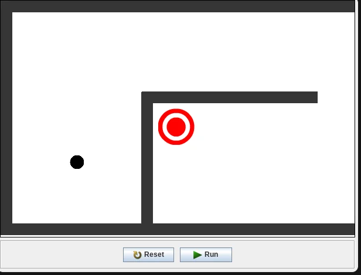

Rebound

The original Java game, about a half-MB download.
Controls
- Mouse
- Aim. The further away you point, the harder the shot
- Click
- Shoot
- ← →
- Look around the level (or A D)
- R
- Start the level over
A bounce-shot game I made in Greenfoot in April 2013. You get two shots to bank the ball into the target on the first level, and three on the second. That's as far as it goes: the second level's target doesn't do anything yet, and neither does the Retry button, so press R to go again.
This is the original Java game, running in your browser as an applet. Greenfoot never exported it, so in 2026 its compiled classes were packed into a jar with the Greenfoot runtime. Java runs through CheerpJ by Leaning Technologies, which loads from its own servers when you press Play.